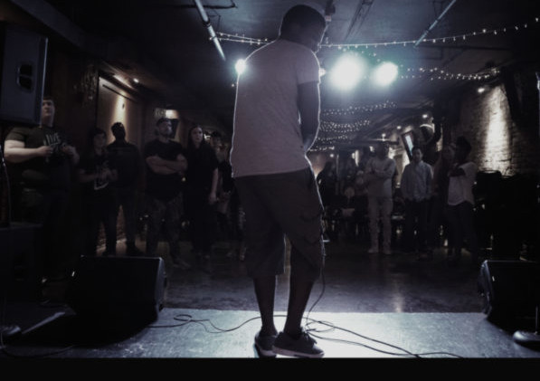

About
After receiving a Cisco Networking Technician degree, Manel Phiseme decided in March of 2021 to go back to school for Front-End Web Development. He is currently a student both at Metropolitan Community College and Bellevue University finishing up his degree both in Front-End Web Development and Web Development. Manel has always had a passion for Information technology.
He started college going for a degree in Computer Science. After a year due to personal reasons, he took a break from school. When he came back to school, he switched his degree to Cisco networking due to some influence. While pursuing a degree in Computer Science he had the opportunity of receiving an internship at Gallup to test software codes. Within his time there he was given the chance to apply some of the skills he learned. Those include HTML, CSS, and Java coding.
Though he started his study in Web Development at a little time his education, it is not all new to him. He already has some experience in it. He has created and is currently managing two websites using WordPress. During the process of working on these websites he had to rely on his knowledge on HTML and CSS coding.
Throughout the years Manel has accumulated a lot of skills. He gathered customer service skills while working for companies like PayPal and perseverance skills while working as an intern for Gallup. He has a lot of major certificates. He has a certificate from “National Career Readiness Certification” in February 2017. He has one from “Bring Your A Game to Work” of that same year. He also has one from “Toastmasters International” in December 2016. Manel is a highly motivated individual. He does not stop when faced with challenges.
